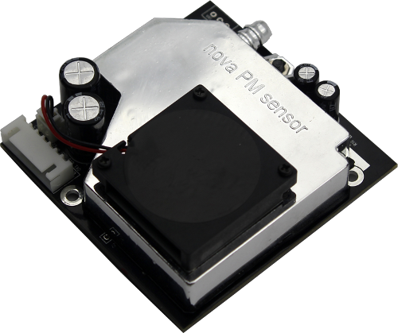
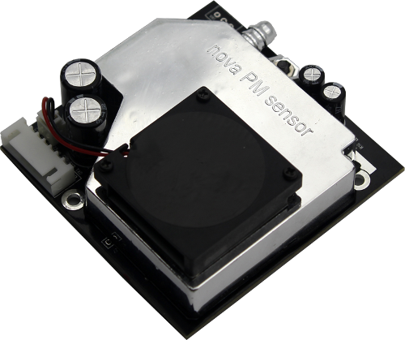
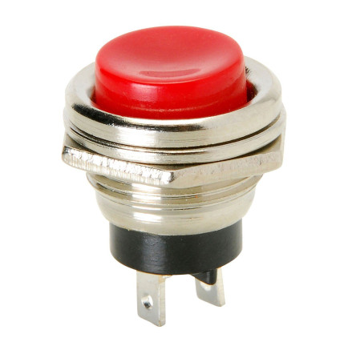
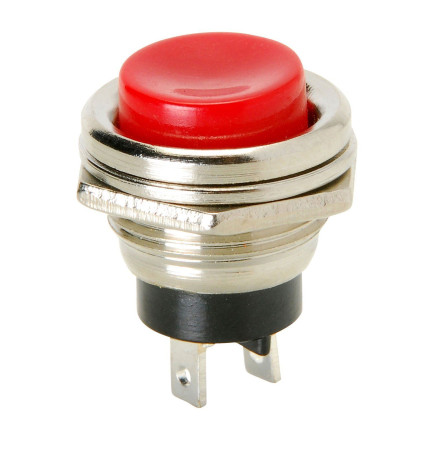

Build Your Sniffer
Gather Material
To build 1 device you will need:
1. An ATmega328 with Arduino bootloader 2. An ESP8266 NodeMCU Lua D1 Mini. Notes:
2. An ESP8266 NodeMCU Lua D1 Mini. Notes:
- Ask the seller for the MAC address or read the instruction below to get MAC address
- Ask the seller to solder the device as the image
 3. An ESP8266 cable (In order to upload source code to ESP8266)
4. A LCD1602 (green or blue)
5. A LCD I2C module. Notes:
3. An ESP8266 cable (In order to upload source code to ESP8266)
4. A LCD1602 (green or blue)
5. A LCD I2C module. Notes:
- Ask the seller what the address of I2C is (0x27 or 0x3F) - Ask the seller to solder the LCD and I2C module together
 6. A Temperature and Humidity module (DHT11) (3 legs)
7. A Nova fitness SDS011 (PM sensor). Contact IoT club by email: aavn-iot-lab@axonactive.com to get this device

8. 30 Male - Male jumper wire
6. A Temperature and Humidity module (DHT11) (3 legs)
7. A Nova fitness SDS011 (PM sensor). Contact IoT club by email: aavn-iot-lab@axonactive.com to get this device

8. 30 Male - Male jumper wire
 9. 15 Female - Male jumper wire
10. A Push-Button

11. A Breadboard Mini 85 x 55 x 10 mm
9. 15 Female - Male jumper wire
10. A Push-Button

11. A Breadboard Mini 85 x 55 x 10 mm
 12. An Adapter 5V - 1Amp (Connect with ESP8266 cable to provide electric power)
12. An Adapter 5V - 1Amp (Connect with ESP8266 cable to provide electric power)
 13. A Dual led (common cathode - )
14. A Plastic box to make the case (160 x 85 x 55 mm)
13. A Dual led (common cathode - )
14. A Plastic box to make the case (160 x 85 x 55 mm)
 15. 3 Resistor - 220 Ohm
16. A Crystal - 16 MHz
15. 3 Resistor - 220 Ohm
16. A Crystal - 16 MHz
 17. 2 Ceramic capacitor - 22 pF
17. 2 Ceramic capacitor - 22 pF
 18. An Electrolytic capacitor - 10 uF (Long leg is the positive (+) lead, the shorter one is negative (-) lead)
18. An Electrolytic capacitor - 10 uF (Long leg is the positive (+) lead, the shorter one is negative (-) lead)
 19. An USB UART CP2102 (To upload source code for Atmega328. It is not included in final product.)
19. An USB UART CP2102 (To upload source code for Atmega328. It is not included in final product.)

Build Sniffer Box
Breadboard (and connections): ATmega328 pinout diagram is shown in the figure below: ATmega 328 pin mapping table:
ATmega 328 pin mapping table:
ATmega 328 pin mapping table:
ATmega 328 pin mapping table:
Install IDE
We recommend use Arduino IDE with ESP8266 plugin since we can re-use many sensor libraries from Arduino. You can follow the instruction from the link below to prepare IDEhttp://esp8266.github.io/Arduino/versions/2.3.0/doc/installing.html
Needed libraries:
- 1. Library for temperature and humidity sensor DHT11 or DHT22
- 2. Library for the LiquidCrystal LCD display connected to an Arduino board
- 3. Json Library for Arduino
- 4. Low power functions library JeeLib (to reduce power consumption)
- 5. Nova sensor library to measure dust data (PM2.5 and PM10) in the environment
You can get all the libraries here: https://github.com/aavn/Sniffer/tree/master/libs, unzip all the libraries then put them to folder \libraries of Arduino sketch directory. Restart Arduino IDE and start using all of libraries. You can find the sketch folder in File/Preferences. If the \libraries folder does not exist, you can simply create it.
Get MAC Address
Normally, you can ask the seller the MAC address of the ESP8266 board. Otherwise, you can follow these steps to get the MAC address
1. Connect the ESP8266 MCU to computer using USB2. Open Arduino IDE and create a new program (File->New), save it.
3. Select menu Tools -> Board and select ‘NodeMCU 1.0 (ESP-12E Module) and port (the usb port connected to the MCU)
4. Open Serial Monitor (by click the top-right button on the IDE)
Get LCD address (optional)
If your seller cannot tell you the address of your LCD-I2C module, you can use the sketch from the library to find the address: File/Examples/LiquidCrystal_I2C/i2c_scanner